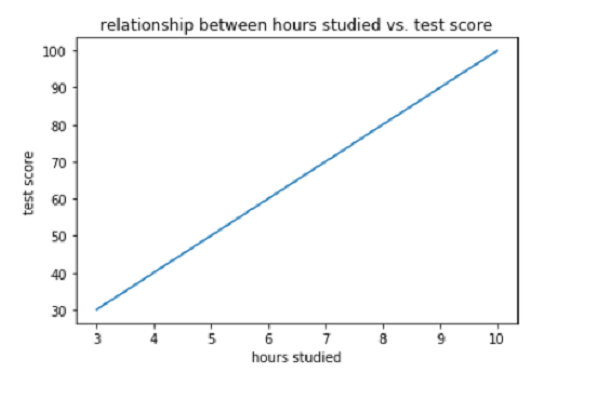
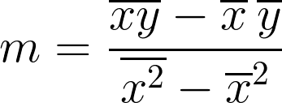
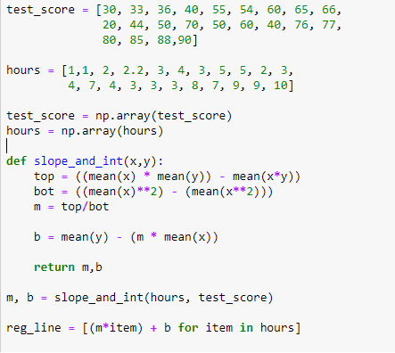
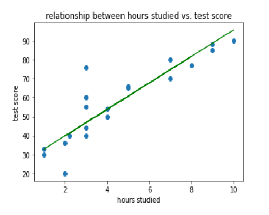
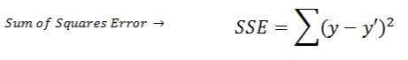
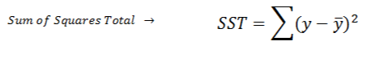

date posted: 2019-06-20
As you will start to study machine learning first thing you are going to notice if you had studied statistics or mathematics even in highschool is that most algorithms are based on those models we learned long time ago.
Linear Regression is one of the basic however powerful model so it is essential to acquire full understanding of basics before moving on.
Simply put: longer time you spend time on studying, higher test score. This is concept of simple linear regression. It is referred to as simple if there is only one feature(hours studied) to make prediction.
 figure 1.1y = test score
x = hours studied
By looking at the line created we can easily assume if student studied x = 2hours than y = 20 test score. You've just predicted using linear regression.
y = mx + b. Equation for linear relationships. If we find m = slope and b = intercept, we can predict test score for any x.
Finding slope:
 figure 1.2m = mean(xy) - mean(x)mean(y) / mean(x^2) - mean(x)^2
Finding Intercept:
b = mean(y) - (m * mean(x))
By finding m and b using the formula above we will find best fitting line which is referred to as regression line.
for more dataset lets try to find slope, intercept and plot regression line. This procedure is what is happenning behind machine learning linear regression model, it automatically looks at dataset and creates regression line therefore we could make predictions on future data using that line.
 figure 1.3manually creating regression line help us understand what is happening at the back therefore allow us to manipulate our model for better accuracy. Notice that on last line of code I am predicting y-variable for each x-variable using slope and intercept I've received.
 figure 1.4blue dots are our actual data and green line created is our regression line. Distance between actual data and green line is an error. Line with least mean of squared error is judged to be best fitting regression line.
From figure 1.4 most datas are not exact fit to the line. Our goal is to create a regression line that has highest accuracy. Measuring accuracy is important since we get a sense of how our model is and allow us to improve on our accuracy either by getting more features or scaling data.
First considering regression line calculate squared error for each data point and sum them. Error is distance from data point to regression line. The reason for squaring error is since some errors are positive and some are negative we would want to consider them equally. It can be done by applying absolute value however we want to give more weight on errors therefore square it.
 figure 1.5y` is regression line and y is actual value.
Secondconsider mean(y) which would be a straight line going horizontally at y-variable = mean(y). Similarily lets calculated sqaured error from mean(y).
You will notice if you divide this formula by n = number of data point, it is a variance.
Now SSE/SST explains % of variation that is not described by the regression line. Meaning if it has 20%, implies that 20% of data set cannot be predicted using regression line.
Finally since SSE/SST explains % variation that is NOT described by regression line, 1 - SSE/SST would be the % of variation that IS described by the regression line.
1 - SSE/SST = Rsquared = coefficient of determination
They all mean the same thing and they are used to measure accuracy of simple linear regression!